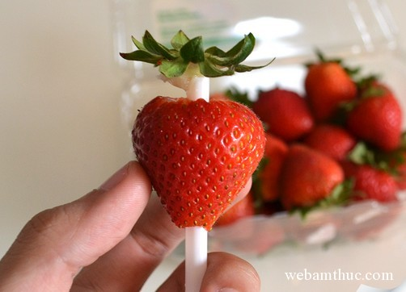
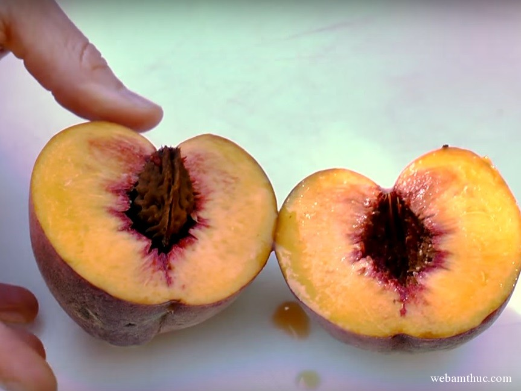
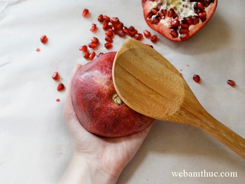
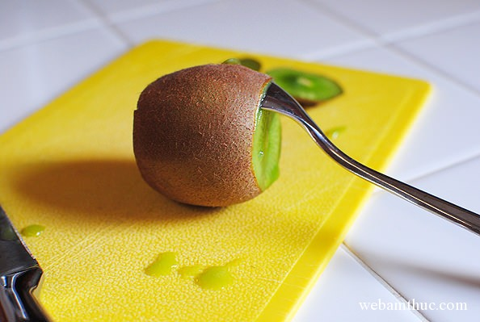
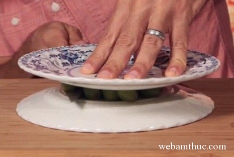

1. Dâu tây

Khoét cuống dâu không chỉ lâu mà còn rất lãng phí, cách dưới đây sẽ giúp việc bỏ cuống nhanh hơn rất nhiều.
– Túm gọn phần cuống lại để việc loại bỏ trở nên dễ dàng hơn.
– Dùng ống hút xuyên ngược từ dưới lên sao cho ống hút sẽ đẩy vào đúng phần cuống để loại bỏ nó.
2. Đào
\
Mỗi lần cắt đào bạn đều phát điên vì hột đào dính chặt vào thịt quả, và để tách được hột thì đào cũng bị nát. Đó là do bạn đã làm không đúng cách,hướng dẫn sau đây sẽ giúp bạn thoát khỏi tình huống này.
– Xác định phần rãnh trên thân đào, đó là hướng nằm của hột.
– Dùng dao bổ đôi quả đào theo đường vuông góc với rãnh trên thân quả.
– Khi tách đôi, hột đào sẽ lộ ra theo hướng nằm dọc và có thể dễ dàng loại bỏ.
3. Lựu

Nếu mỗi lần ăn lựu bạn đều gặp khó khăn trong việc tách ra từng hạt bé xíu thì đây là công thức dành cho bạn.
– Bổ đôi quả lựu theo chiều ngang.
– Nhẹ nhàng bửa ra để từng múi lựu tách khỏi vỏ.
– Dùng một cái muôi lớn đập lên quả lựu để từng hạt rụng ra khỏi vỏ và rơi vào bát.
– Nhặt bỏ những miếng vỏ bị lẫn vào và thưởng thức.
4. Kiwi

Quả kiwi bé xíu, gọt vỏ xong chỉ còn lại có một tẹo khiến bạn tiếc xót. Cùng khám phá cách bỏ vỏ kiwi siêu tiết kiệm chỉ với một chiếc thìa.
– Cắt bỏ 2 đầu quả kiwi.
– Dùng thìa lách vào sát phần vỏ của quả, quay để lia thìa thành một vòng tròn và múc phần thịt quả ra khỏi vỏ.
5. Nho

Bạn muốn cắt đôi những quả nho bé xinh để cho vào salad trái cây hoặc trang trí lên bánh ngọt, sữa chua nhưng việc cắt đôi từng quả mất quá nhiều thời gian. Hãy thay đổi ngay bằng phương pháp hữu ích này.
– Đặt nho lên một cái đĩa nông, dùng một cái đĩa khác úp lên để giữ cho nho khỏi lăn.
– Dùng dao dài cắt dọc theo khe hở giữa 2 đĩa, những quả nho sẽ được cắt đôi một cách nhanh chóng.
Cách này cũng có thể áp dụng khi bạn muốn cắt cà chua bi hoặc trứng cút đấy.
Chúc các bạn thực hiện thành công!